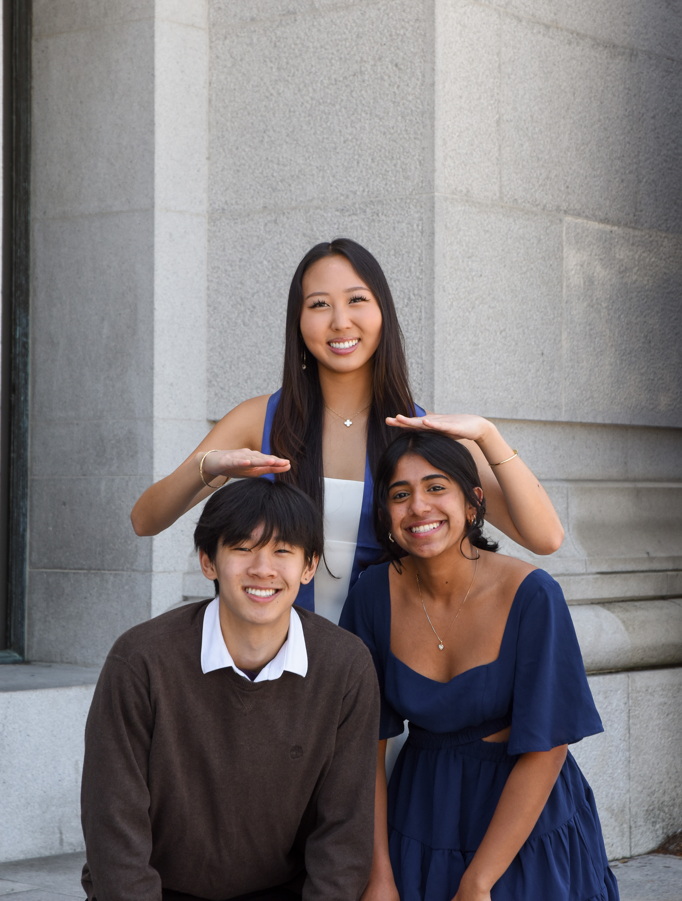

My name is Azalea Bailey and I'm a photographer, musician, and computer scientist. Growing up, I found myself dabbling in a myriad of activities, from fishing to sewing to playing the recorder. Nowadays, I'm working in tech while steadily exploring being a musician and photographer in San Francisco.
Throughout my pursuits, I'm driven by human connection. I fell in love with photography because it lets me bring out a confidence in my subjects that I once lacked in myself. The best part about singing and playing trumpet is seeing the crowd go wild after a performance. And I'm deeply grateful for my particular space in tech (education and gig work), where I can help people learn and grow.
I'm always open to meeting new people and connecting. We can jam, I could take your photos, or something else entirely. Feel free to DM me on Instagram and reach out <3


.jpg)





Graduation days carry something I can never quite put into words — equal parts relief, pride, and nostalgia for a place still being left. These are some of my favorite sessions to shoot.


Azalea Bailey
My name is Azalea Bailey and I'm a photographer, musician, and computer scientist. Growing up, I found myself dabbling in a myriad of activities, from fishing to sewing to playing the recorder. Nowadays, I'm working in tech while steadily exploring being a musician and photographer in San Francisco.
Throughout my pursuits, I'm driven by human connection. I fell in love with photography because it lets me bring out a confidence in my subjects that I once lacked in myself. The best part about singing and playing trumpet is seeing the crowd go wild after a performance. And I'm deeply grateful for my particular space in tech (education and gig work), where I can help people learn and grow.
I'm always open to meeting new people and connecting. We can jam, I could take your photos, or something else entirely. Feel free to DM me on Instagram and reach out <3